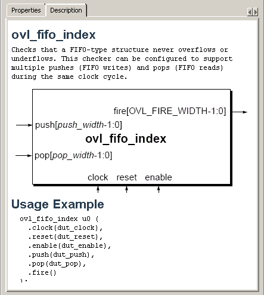
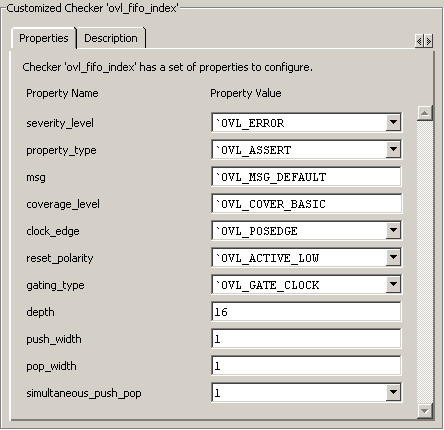
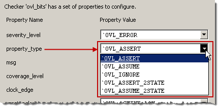

You can use the
Properties tab to customize any assertion checker in the OVL library
to suit your design.
Prerequisites
The OVL Checkers Manager graphic
interface must be open and displayed.
Before customizing an assertion
checker, review the description, block diagram, and usage model
of the checker in the Description tab of the OVL Checkers Manager.
The Description tab
contains a short description of the assertion checker you have chosen
from the All Library Checkers list. It also includes a block diagram
that shows how input and output ports are connected, and a usage
example of the checker.
Procedure
- Select
a checker from the All Library Checkers list and click the Description tab
to display the description, diagram, and usage example (Figure 1). In this example, the short
description explains that the ovl_fifo_index assertion checker can
be customized to support multiple pushes (FIFO writes) and pops
(FIFO reads).
Figure 1. Description
for ovl_fifo_index
Now you are ready to use the Properties tab
to customize an assertion checker.
- Open the Properties tab.
- Add checkers to the Customized
Checkers list as described in Adding an Assertion Checker.
- Select the checker you want
to customize from the Customized Checkers list.
- Select the Properties tab
to edit the available properties (Figure 2).
Figure 2. Edit Properties in
the Properties Tab
You can edit some properties
by highlighting the current value and typing in a new one. In Figure 2, the depth property was changed to
from 1 to 16. You can edit other properties by simply choosing from
a drop-down list (Figure 3).
Figure 3. Drop-Down List Options
After
editing assertion checker properties you need to rename the checker
and compile it.